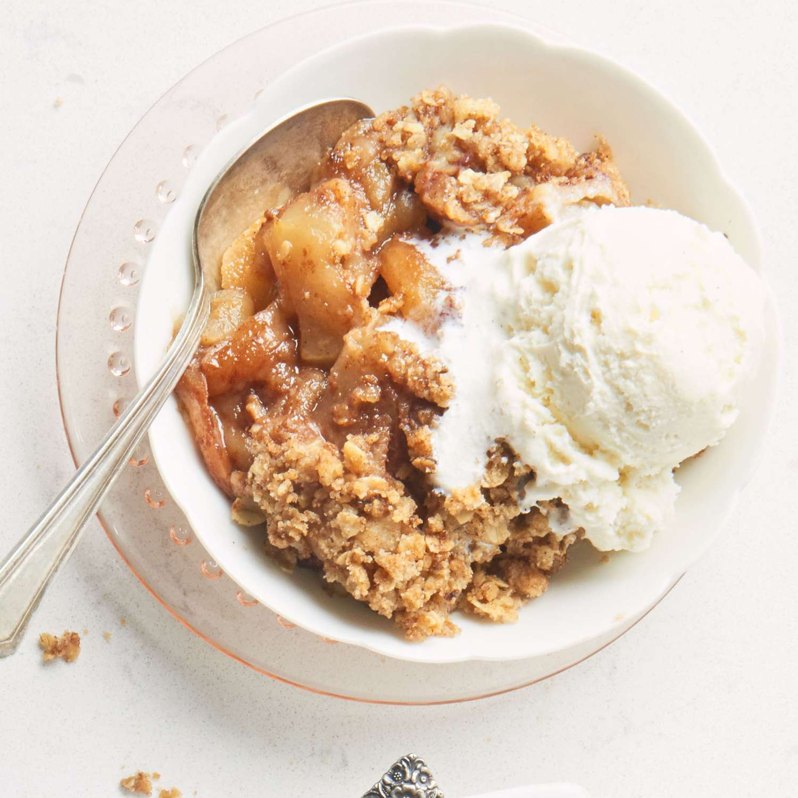

Home
Apple Pie

Description
Very quick and easy recipe! Delicious with vanilla ice cream!
Ingredients
- 6 tart apples, peeled, cored, and sliced
- 1/2 cup butter, melted
- 1 cup all-purpose flour
- 1 cup white sugar
- 1 cup quick-cooking oats
- 2 tablespoons ground cinnamon, divided
- 1/4 cup butter, cit into pieces
Steps
- Preheat oven to 350 degrees F (175 degrees C).
- Place apples in a 9x13 inch baking dish. In a bowl, mix melted butter, flour, sugar, oats, and 1 tablespoon cinnamon to form a crumbly mixture. Sprinkle over apples. Dot with remaining 1/4 cup butter, and sprinkle with remaining 1 tablespoon cinnamon.
- Bake 50 minutes in the preheated oven, until lightly browned and apples are tender.